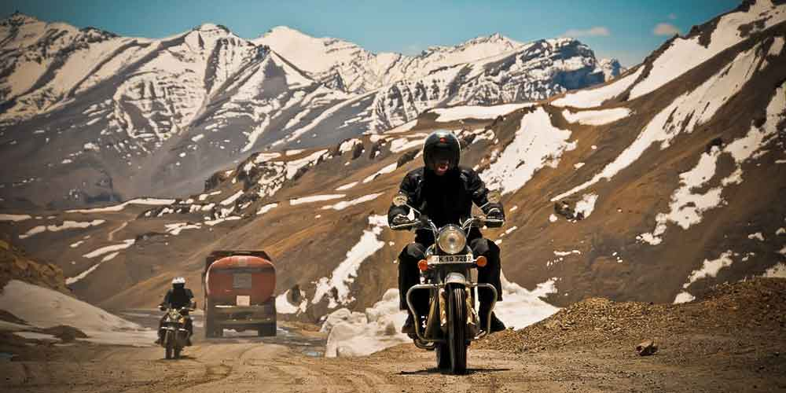
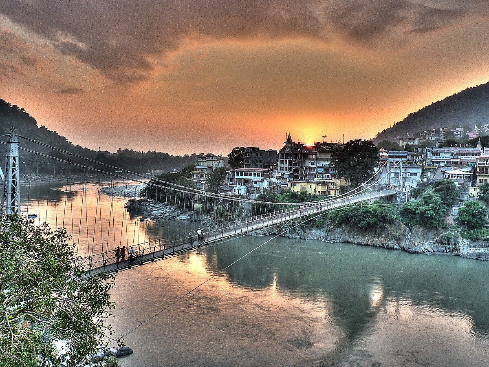
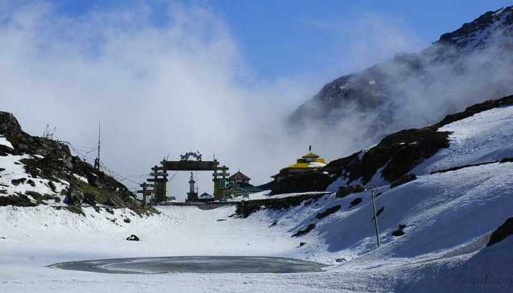
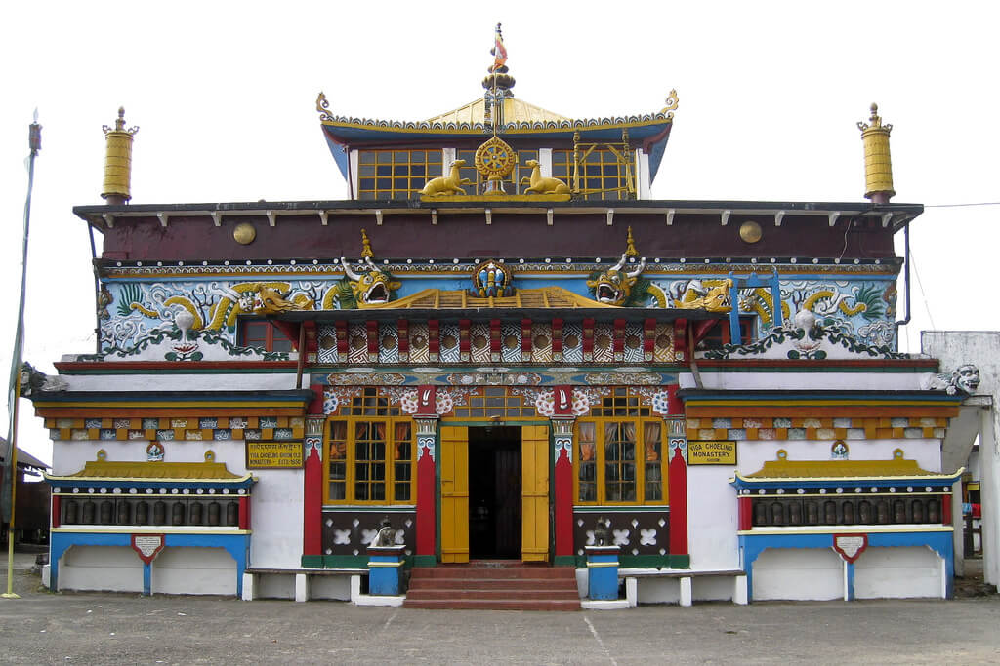
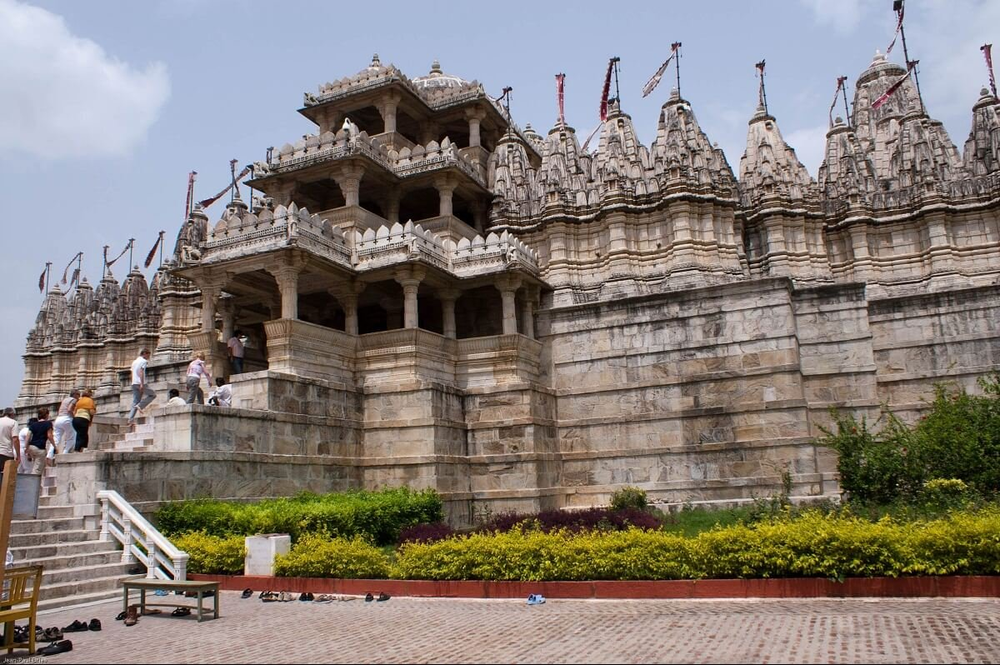
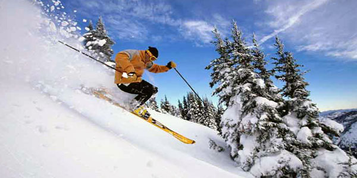
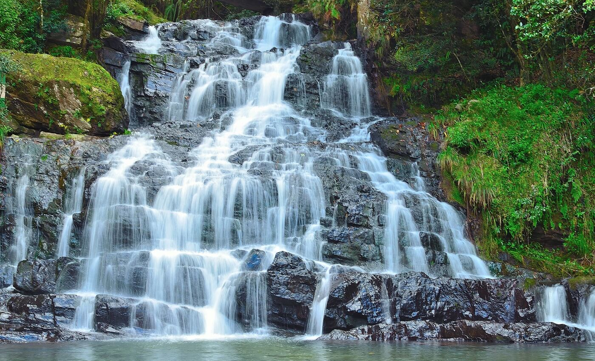

Summer is just not about sweat and heat; it is about summer vacations and memorable moments spend amidst the beautiful landscapes of India. Pack your bags and head towards any of the below mentioned top 35 Places to Visit in India in Summer for an immemorial summer vacation this year.
Leh-Ladakh is one of the most amazing places in India; quite aloof from rest of the country. This high altitude cold desert is encircled by the Karakoram Peaks and is decorated by beautiful lakes and mighty rivers, like Indus and Zanskar. The must-do activities at Leh-Ladakh include: Worship at the multiple Buddhist monasteries, like the Shanti Stupa, Sankar Monastery, Hemis Monastery, Matho Monastery, Lamayuru Monastery, Alchi Monastery and many others.

Encircled with the snow capped Himalayas, Sikkim is an awe-inspiring tourist destination of India. Rejuvenate your body and soul listening to the ripples of River Teesta and strolling through 200 species of orchids. Must-do activities at Sikkim include Hike through the sprawling greenery at the Himalayan Valleys of Sikkim. Inhale fresh air at the Rhododendron Forests or witness a mesmerizing sunrise at the Kanchenjunga Peak. You can also enjoy a breathtaking scenic beauty at the banks of Lake Tsogmo, reflecting the images of the Himalayan Range over the crystalline waters. Trek at the tranquil high altitude Goecha La which takes you through the Dzongri and Thangsing meadows; Lamuney is the highest point for camping at Sikkim. Raft through the rapids of River Teesta to de-stress yourselves. As you sail through the river, you pass through the paddy fields, deep green woods, small villages and white sandy beaches.
Nestled amidst the Dauladhar range and PirPanjal mountains, Manali is the paradise for lovers. Located at a height of 2050 meters, Manali is a spot to play at the snow carpets of Manali. Explore the spellbinding natural beauty of the Himalayas trekking at the Hampta Pass. Get chilled with white river rafting on the wild waters of River Beas or shore high in the sky with paragliding and ski on the icy grounds of Rohtang Pass. Roll down the sprawling green hills of Solang Valley for some fun.

Rishikesh is a complete package of fun, excitement and divinity. Located at the Himalayan foothills this summer holiday destination has a soothing climate and awe-inspiring scenic beauty. Here you can mediate and perform yoga at the health resorts spread throughout the city. These yoga centers can transform your stressed life into a life pf peace and tranquility; helping you get into a better diet and restore your health.

Yes, if you are looking for silence and solitude, Tawang welcomes you. Located at an altitude of 10,000 feet, this summer retreat is best known for Tawang Monastery which relates to the 14th century. This is the second largest monastery of Asia and a treasure house of old manuscripts, books and artifacts related to Buddhism. Sela Pass, which is the only high altitude pass of the world which is motorable. Drive through the Sela Pass to enjoy the bewitching scenic beauty of the surroundings. The Paradise Lake on the way is another gem in the nature’s creation. Gorichen Peak is a challenge to the trekkers and once you reach the 22,500 feet hill top, you will not regret the toil, due to the panoramic view of the lush greenery and snow White Mountain peaks that await your presence. The 16000 feet elevation of Bumla Pass is another trekking destination which can boost your adrenaline to the fullest.

Kashmir, known as the Paradise on Earth offers a different taste to your vacation. Here you can stay on House boats: It is a lifetime experience to stay on the well decorated and well equipped houseboats of Dal Lake. Here you open your eyes to the sight of shikaras sailing on the water, selling flowers and other products. if you want to avoid the hustle and bustle of the Dal Lake, stay at the houseboats of Nagin Lake.

If you want to wake up to the peeping sun from behind the snow peaks of Kanchenjunga or if you want to have a playful vacation, Darjeeling is your summer escapade. Here you can ride the toy trains, which take you round the sprawling greenery of Darjeeling. Pray at the Peace Pagoda and Ghoom Monastery to feel peaceful. Walk through the dew drenched tea plantations and sip a cup of exotic Darjeeling tea to feel refreshed.

This is the only hill station at the desert state of Rajasthan. This granite hill top is safeguarded with dense forests and is also a pilgrimage. Mount Abu is known for the Dilwara Temples. This group of Jain temples are beautifully sculpted with religious images and decorated with intricate designs. Almost a thousand years old, these shrines are made from marble.

If you want to avoid the tourist crowd, be at the lowlands of Auli. There are several reasons to visit Auli, like skiing at one of the highest Ski Resort of the world. At summer, this skiing destination transforms into a Valley of Flowers, which is a photographer’s paradise. Getting 180 degrees view of the Nanda devi Range. You can also get a bird’s eye view of the towering mountains from the cable car rides of Auli; this is the highest and longest ropeway of Asia after Gulmarg. Located at 3010 meters above sea level, this place is also popular amongst paragliders.

Encircled by the Khasi Hills from all sides, Shillong is one of the most wonderful tourist destinations of India. Fill your heart with fresh air at the rolling hills of Shillong, besides touching the clouds at the 2000 meters high Shillong Peak. This is also an ideal picnic spot with villages lying at its foothills, which look more like tiny dots from the top.

Click the link below
Plan Your Trip Now